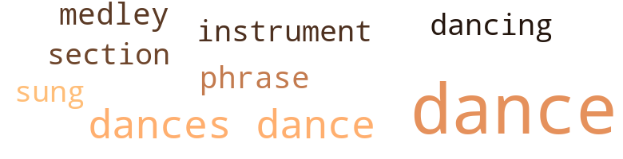
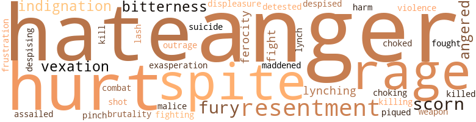

24 music-related terms matched in this text.
Most frequent terms in this topic: dance (16); dances (2); instrument (1); sung (1); dancing (1)

dance.n.01
Definition: an artistic form of nonverbal communication
| word |
sentence |
| dance |
I 've got to see about some handbills and some more tickets for the dance . " |
| dance |
" It 's the N. W. L. dance , " she explained , " the Negro Welfare League , you know . |
| dance |
" And he 's coming up here to your dance ? " |
| dance |
" It seems rather curious , a man like that , going to a Negro dance . " |
| dance |
It was as if the thought of any friend of John Bellew 's going to a Negro dance was to her the most amusing thing in the world . |
| dance |
She was going out later herself , and that meant she would n't , probably , see Brian until morning and so could put off for a few more hours speaking of Clare and the N. W. L. dance . |
| dance |
She was annoyed , too , because she was aware that she had consented to something which , if it went beyond the dance , would involve her in numerous petty inconveniences and evasions . |
| dance |
THREE The things which Irene Redfield remembered afterward about the Negro Welfare League dance seemed , to her , unimportant and unrelated . |
| dance |
She remembered rushing around here and there , consulting with this person and that one , and now and then snatching a part of a dance with some man whose dancing she particularly liked . |
| dance |
And she remembered that towards the end of the dance Brian had come to her and said : " I 'll drop you first and then run Clare down . " |
| dance |
Except for these few unconnected things the dance faded to a blurred memory , its outlines mingling with those of other dances of its kind that she had attended in the past and would attend in the future . |
| dances |
Except for these few unconnected things the dance faded to a blurred memory , its outlines mingling with those of other dances of its kind that she had attended in the past and would attend in the future . |
| dance |
But undistinctive as the dance had seemed , it was , nevertheless , important . |
| dance |
Never since his faintly derisive surprise at Irene 's information that she was to go with them the night of the dance , had he shown any disapproval of Clare 's presence . |
| dances |
Clare went , sometimes with Irene and Brian , to parties and dances , and on a few occasions when Irene had n't been able or inclined to go out , she had gone alone with Brian to some bridge party or benefit dance . |
| dance |
Clare went , sometimes with Irene and Brian , to parties and dances , and on a few occasions when Irene had n't been able or inclined to go out , she had gone alone with Brian to some bridge party or benefit dance . |
| dance |
Though she could for some purpose of her own - the desire to be included in some party being made up to go cabareting , or an invitation to a dance or a tea - talk fluently and entertainingly . |
dance.v.02
Definition: move in a pattern; usually to musical accompaniment; do or perform a dance
| word |
sentence |
| dancing |
She 's dancing with Ralph Hazelton at the moment . |
dance.v.03
Definition: skip, leap, or move up and down or sideways
| word |
sentence |
| dance |
If nobody asks me to dance , not even Dr. Redfield , I 'll just sit and gaze on the great and the near great , too . |
medley.n.01
Definition: a musical composition consisting of a series of songs or other musical pieces from various sources
| word |
sentence |
| medley |
His companion 's lips parted in some answer , but her words were blurred by the little intervening distance and the medley of noises floating up from the streets below . |
musical_instrument.n.01
Definition: any of various devices or contrivances that can be used to produce musical tones or sounds
| word |
sentence |
| instrument |
And , with a muttered apology to Clare , , she took up the instrument . |
phrase.n.02
Definition: a short musical passage
| word |
sentence |
| phrase |
Everything ca n't be explained by some general biological phrase . " |
section.n.01
Definition: a self-contained part of a larger composition (written or musical)
| word |
sentence |
| section |
It was as if he had stepped out beyond her reach into some section , strange and walled , where she could not get at him . |
sing.v.02
Definition: produce tones with the voice
| word |
sentence |
| sung |
How savagely she had clawed those boys the day they had hooted her parent and sung a derisive rhyme , of their own composing , which pointed out certain eccentricities in his careening gait ! |
97 violence-related terms matched in this text.
Most frequent terms in this topic: anger (12); hate (9); hurt (8); spite (7); resentment (6)

aggravation.n.01
Definition: an exasperated feeling of annoyance
| word |
sentence |
| exasperation |
Her hands shook slightly , for she was in a near rage of impatience and exasperation . |
anger.n.01
Definition: a strong emotion; a feeling that is oriented toward some real or supposed grievance
| word |
sentence |
| anger |
It was n't the great measure of anger that surprised and slightly amused her . |
| anger |
Inside the shop , she stilled the trembling of her lips and drove back her rising anger . |
| anger |
She was even more vexed at her own explosion of anger . |
| anger |
Nevertheless , Irene felt , in turn , anger , scorn , and fear slide over her . |
| anger |
Irene cried out : " But , Brian , I - " and stopped , amazed at the fierce anger that had blazed up in her . |
| anger |
" They do not ! " she insisted , forcing back the tears of anger that were threatening to fall . |
| anger |
Before them stood John Bellew , speechless now in his hurt and anger . |
| anger |
Or , driven to anger , she would fight with a ferocity and impetuousness that disregarded or forgot any danger ; superior strength , numbers , or other unfavourable circumstances . |
| anger |
At that Clare laughed , her spark of anger vanished as quickly as it had appeared . |
| anger |
Irene , who was struggling with a flood of feelings , resentment , anger , and contempt , was , however , still able to answer as coolly as if she had not that sense of not belonging to and of despising the company in which she found herself drinking iced tea from tall amber glasses on that hot August afternoon . |
| anger |
There was a brief silence , during which she feared that her self-control was about to prove too frail a bridge to support her mounting anger and indignation . |
| anger |
It was , Irene , thought , unbelievable and astonishing that four people could sit so unruffled , so ostensibly friendly , while they were in reality seething with anger , mortification , shame . |
anger.v.02
Definition: become angry
| word |
sentence |
| angered |
That strange , and to her fantastic , notion of Brian 's of going off to Brazil , which , though unmentioned , yet lived within him ; how it frightened her , and - yes , angered her ! |
| angered |
That had angered Irene , and increased her disdain and contempt for the other . |
annoyance.n.02
Definition: anger produced by some annoying irritation
| word |
sentence |
| vexation |
She remembered the not quite derisive smile with which Brian had cloaked his vexation when she informed him - oh , so apologetically - that she had promised to take Clare , and related the conversation of her visit . |
| vexation |
Yet Irene could never be sure whether her comings were a joy or a vexation . |
attack.v.01
Definition: launch an attack or assault on; begin hostilities or start warfare with
| word |
sentence |
| assailed |
Clare 's face took on a startled look , as though she were totally unprepared for this new weapon with which Irene had assailed her . |
battle.v.01
Definition: battle or contend against in or as if in a battle
| word |
sentence |
| combat |
With that Irene did n't at all agree , but many arguments in the past had taught her the futility of attempting to combat Brian on ground where he was more nearly at home than she . |
contemn.v.01
Definition: look down on with disdain
| word |
sentence |
| scorn |
Was it , could it possibly be , a mixture of scorn and distaste ? |
| despised |
As if he more or less despised everything and everybody . " |
| scorn |
At her words and tone a chilly wave of scorn had crept through Irene . |
| scorn |
She glanced quickly about the bare room , taking everyone in , even the two policemen , in a sharp look of flashing scorn . |
| despising |
Irene , who was struggling with a flood of feelings , resentment , anger , and contempt , was , however , still able to answer as coolly as if she had not that sense of not belonging to and of despising the company in which she found herself drinking iced tea from tall amber glasses on that hot August afternoon . |
displeasure.n.01
Definition: the feeling of being displeased or annoyed or dissatisfied with someone or something
| word |
sentence |
| displeasure |
And displeasure . |
ferociousness.n.01
Definition: the trait of extreme cruelty
| word |
sentence |
| brutality |
It was a brutality , and undeserved . |
ferocity.n.01
Definition: the property of being wild or turbulent
| word |
sentence |
| ferocity |
She ran across the room , her terror tinged with ferocity , and laid a hand on Clare 's bare arm . |
| ferocity |
Or , driven to anger , she would fight with a ferocity and impetuousness that disregarded or forgot any danger ; superior strength , numbers , or other unfavourable circumstances . |
fight.v.02
Definition: fight against or resist strongly
| word |
sentence |
| fighting |
" Surely , " Irene began , fighting back the fear and irritation that she felt , " surely - " Her husband silenced her , saying sharply : " Let 's not talk about it , please . " |
| fought |
She fought back the quick answer that rose to her lips and said instead : " I 'm getting right up . |
| fight |
Or , driven to anger , she would fight with a ferocity and impetuousness that disregarded or forgot any danger ; superior strength , numbers , or other unfavourable circumstances . |
| fight |
Irene 's lips trembled almost uncontrollably , but she made a desperate effort to fight back her disastrous desire to laugh again , and succeeded . |
frustration.n.03
Definition: a feeling of annoyance at being hindered or criticized
| word |
sentence |
| frustration |
Yet all the while , in spite of her searchings and feeling of frustration , she was aware that , to her , security was the most important and desired , thing in life . |
fury.n.01
Definition: a feeling of intense anger
| word |
sentence |
| fury |
She had n't intended to behave like this , but her extreme resentment at his attitude , the sense of having been wilfully misunderstood and reproved , drove her to fury . |
| rage |
Her hands shook slightly , for she was in a near rage of impatience and exasperation . |
| fury |
You did n't tell him you were coloured , so he 's got no way of knowing about this hankering of yours after Negroes , or that it galls you to fury to hear them called niggers and black devils . |
| rage |
But her lips tightened and no effort could check the hot tears of rage and shame that sprang into her eyes and flowed down her cheeks ; so she laid her face in her arms and wept silently . |
| Rage |
Rage boiled up in her . |
| rage |
His voice was a snarl and a moan , an expression of rage and of pain . |
| fury |
Seen across the long stretch of years , the thing had more the appearance of an outpouring of pent-up fury than of an overflow of grief for her dead father ; though she had been , Irene admitted , fond enough of him in her own rather catlike way . |
| rage |
The words stood out from among the many paragraphs of other words , bringing with them a clear , sharp remembrance , in which even now , after two years , humiliation , resentment , and rage were mingled . |
| rage |
In Irene , rage had not retreated , but was held by some dam of caution and allegiance to Clare . |
| rage |
At least she had n't the mortification and shame that Clare Kendry must be feeling , or , in such full measure , the rage and rebellion that she , Irene , was repressing . |
gag.v.06
Definition: cause to retch or choke
| word |
sentence |
| choked |
She remembered her own little choked exclamation of admiration , when , on coming downstairs a few minutes later than she had intended , she had rushed into the living-room where Brian was waiting and had found Clare there too . |
| choking |
She shook her head , unable to speak , for there was a choking in her throat , and the confusion in her mind was like the beating of wings . |
hate.n.01
Definition: the emotion of intense dislike; a feeling of dislike so strong that it demands action
| word |
sentence |
| hate |
Why , in the face of Bellew 's ignorant hate and aversion , had she concealed her own origin ? |
hate.v.01
Definition: dislike intensely; feel antipathy or aversion towards
| word |
sentence |
| detested |
For she was late again , and Brian , she well knew , detested that . |
| hate |
how I hate sick people , and their stupid , meddling families , and smelly , dirty rooms , and climbing filthy steps in dark hallways . " |
| hate |
It does seem that we 're always so busy - I do hate that - but what can we do ? |
| hate |
" And how I do hate to think of it ! " she would say , always with a suggestion of leashed rebellion ; " but I ca n't see how I 'm going to get out of it . |
| hate |
" Because they hate 'em , son . " |
| hate |
And why do they hate 'em ? " |
| hate |
You ca n't know , ' Rene , how , when I used to go over to the south side , I used almost to hate all of you . |
| hate |
I do n't dislike them , I hate them . |
| hate |
I 'd hate to be her . " |
indignation.n.01
Definition: a feeling of righteous anger
| word |
sentence |
| indignation |
Her indignation was not lessened by Clare 's flattering reference to her wiseness . |
| outrage |
Certainly not because of any alarms or feeling of outrage on the part of others . |
| indignation |
There was a brief silence , during which she feared that her self-control was about to prove too frail a bridge to support her mounting anger and indignation . |
injury.n.01
Definition: any physical damage to the body caused by violence or accident or fracture etc.
| word |
sentence |
| harm |
Once ca n't do such a terrible lot of harm . " |
| hurt |
It did hurt . |
| hurt |
She was surprised that , having thought the thought , conceded the fact , she was no more hurt , cared no more , than during her previous frenzied endeavours to escape it . |
| hurt |
Before them stood John Bellew , speechless now in his hurt and anger . |
| hurt |
Choked down , it turned to a whimper , like a hurt child 's . |
| hurt |
Her throat hurt . |
kill.v.10
Definition: cause the death of, without intention
| word |
sentence |
| kill |
I could kill him ! |
| killed |
Irene , who was a year or more older than Clare , remembered the day that Bob Ken-dry had been brought home dead , killed in a silly saloon-fight . |
| killing |
Always robbing and killing people . |
lynch.v.01
Definition: kill without legal sanction
| word |
sentence |
| lynch |
" Dad , why is it that they only lynch coloured people ? " |
lynching.n.01
Definition: putting a person to death by mob action without due process of law
| word |
sentence |
| lynching |
At dinner Brian spoke bitterly of a lynching that he had been reading about in the evening paper . |
| lynching |
After the boys had gone up to their own floor , Irene said suavely : " I do wish , Brian , that you would n't talk about lynching before Ted and Junior . |
madden.v.03
Definition: make mad
| word |
sentence |
| maddened |
It was that smile that maddened Irene . |
malice.n.01
Definition: feeling a need to see others suffer
| word |
sentence |
| spite |
Brian Redfield had come into the room in that noiseless way which , in spite , of the years of their life together , still had the power to disconcert her . |
| spite |
It was that in spite of her determined selfishness the woman before her was yet capable of heights and depths of feeling that she , Irene Redfield , had never known . |
| spite |
She was n't , however , in spite of her poise and air of worldliness , the ideal dinner-party guest . |
| spite |
And in spite of my recent remarks , Clare does add to any party . |
| spite |
So , in spite of certain unpleasantness and possible danger , she had taken the money to buy the material for that pathetic little red frock . |
| spite |
Yet all the while , in spite of her searchings and feeling of frustration , she was aware that , to her , security was the most important and desired , thing in life . |
| spite |
It might be , it might just be , in spite of all gossip and even appearances to the contrary , that there was nothing , had been nothing , that could n't be simply and innocently explained . |
| malice |
And there was about her an amazing soft malice , hidden well away until provoked . |
pain.v.02
Definition: cause emotional anguish or make miserable
| word |
sentence |
| hurt |
Irene had n't supposed that anyone couid look so hurt . |
| hurt |
She seemed so hurt at being left out that I told her I was sure you 'd forgotten and to just come along . " |
| hurt |
She wanted , suddenly , to shock people , to hurt them , to make them notice her , to be aware of her suffering . |
pinch.n.02
Definition: an injury resulting from getting some body part squeezed
| word |
sentence |
| pinch |
... Yes , of course , in a pinch everything goes . . . . |
pique.v.01
Definition: cause to feel resentment or indignation
| word |
sentence |
| Piqued |
Piqued her . |
resentment.n.01
Definition: a feeling of deep and bitter anger and ill-will
| word |
sentence |
| bitterness |
To count as nothing the annoyances , the bitterness , or the suffering of others , that was Clare . |
| resentment |
And mingled writh her disbelief and resentment was another feeling , a question . |
| resentment |
She had n't intended to behave like this , but her extreme resentment at his attitude , the sense of having been wilfully misunderstood and reproved , drove her to fury . |
| resentment |
Her own resentment was swept aside and her voice held an accent of pity as she exclaimed : " Why , Clare ! |
| resentment |
Junior 's face had a funny little look of resentment . |
| bitterness |
What bitterness I That the one fear , the one uncertainty , that she had felt , Brian 's ache to go somewhere else , should have dwindled to a childish triviality ! |
| resentment |
What she felt was not so much resentment as a dull despair because she could not change herself in this re - spect , could not separate individuals from the race , herself from Clare Kendry . |
| resentment |
Irene felt her resentment changing gradually to a silent , somewhat grudging admiration . |
shoot.v.02
Definition: kill by firing a missile
| word |
sentence |
| shot |
She shot a glance over it . |
suicide.n.01
Definition: the act of killing yourself
| word |
sentence |
| suicide |
But she 'd bore a man like Hugh to suicide . |
violence.n.01
Definition: an act of aggression (as one against a person who resists)
| word |
sentence |
| violence |
Laying it aside , she regarded with an astonishment that had in it a mild degree of amusement the violence of the feelings which it stirred in her . |
weapon.n.01
Definition: any instrument or instrumentality used in fighting or hunting
| word |
sentence |
| weapon |
Clare 's face took on a startled look , as though she were totally unprepared for this new weapon with which Irene had assailed her . |
whip.v.04
Definition: strike as if by whipping
| word |
sentence |
| lash |
Under the lash of his words she was silent . |
25 religion-related terms matched in this text.
Most frequent terms in this topic: Jew (4); devils (2); God (2); blessing (2); church (1)

bible.n.02
Definition: a book regarded as authoritative in its field
| word |
sentence |
| Bibles |
For all their Bibles and praying and ranting about honesty , they did n't want anyone to know that their darling brother had seduced - ruined , they called it - a Negro girl . |
blessing.n.05
Definition: the act of praying for divine protection
| word |
sentence |
| blessing |
She closed her eyes , thinking what a blessing it would be if she could get a little sleep before the boys came in from school . |
| blessing |
Downstairs the ritual of tea gave her some busy moments , and that , she decided , was a blessing . |
christian.n.01
Definition: a religious person who believes Jesus is the Christ and who is a member of a Christian denomination
| word |
sentence |
| Christians |
" Being good Christians , " she continued , " when dad came to his tipsy end , they did their duty and gave me a home of sorts . |
church.n.04
Definition: the body of people who attend or belong to a particular local church
| word |
sentence |
| church |
" They were nice old ladies , " Clare explained , " very religious and as poor as church mice . |
god.n.03
Definition: a man of such superior qualities that he seems like a deity to other people
| word |
sentence |
| God |
Why , the good God only knows . " |
| God |
Too , they were n't quite sure that the good God had n't intended the sons and daughters of Ham to sweat because he had poked fun at old man Noah once when he had taken a drop too much . |
grace.n.05
Definition: (Greek mythology) one of three sisters who were the givers of beauty and charm; a favorite subject for sculptors
| word |
sentence |
| Grace |
When Jack , a schoolboy acquaintance of some people in the neighbourhood , turned up from South America with untold gold , there was no one to tell him that I was coloured , and many to tell him about the severity and the religiousness of Aunt Grace and Aunt Edna . |
heaven.n.02
Definition: the abode of God and the angels
| word |
sentence |
| heaven |
Thank heaven it comes off tomorrow night and does n't happen again for a year . |
jew.n.01
Definition: a person belonging to the worldwide group claiming descent from Jacob (or converted to it) and connected by cultural or religious ties
| word |
sentence |
| Jew |
" Claude Jones ! " and launched into the story of how he was no longer a Negro or a Christian but had become a Jew . |
| Jew |
" A Jew ! " |
| Jew |
" Yes , a Jew . |
| Jew |
A black Jew , he calls himself . |
offer.v.09
Definition: present as an act of worship
| word |
sentence |
| offered |
But in the meantime , while it was still living and still had the power to flare up and alarm her , it would have to be banked , smothered , and something offered in its stead . |
religion.n.01
Definition: a strong belief in a supernatural power or powers that control human destiny
| word |
sentence |
| faiths |
With this self-assurance that she had no real knowledge , she redoubled her efforts to drive out of her mind the distressing thought of faiths broken and trusts betrayed which every mental vision of Clare , of Brian , brought with them . |
| faith |
And did too much striving , too much faith in safety and permanence , unfit one for these other things ? |
| religion |
If he gets along better by turning - " At that , Irene , who was still hugging her unhappy do n't - care feeling of rightness , broke in , saying bitingly : " It evidently does n't occur to either you or Gertrude that he might possibly be sincere in changing his religion . |
saint.n.02
Definition: person of exceptional holiness
| word |
sentence |
| saint |
" And I 'm sure that anybody 'll admit it 's enough to make a saint swear . |
satan.n.01
Definition: (Judeo-Christian and Islamic religions) chief spirit of evil and adversary of God; tempter of mankind; master of Hell
| word |
sentence |
| devils |
You did n't tell him you were coloured , so he 's got no way of knowing about this hankering of yours after Negroes , or that it galls you to fury to hear them called niggers and black devils . |
| devil |
What the devil 's the matter with you ? " |
| devils |
She had a leaping desire to shout at the man beside her : " And you 're sitting here surrounded by three black devils , drinking tea . " |
sin.n.06
Definition: violent and excited activity
| word |
sentence |
| sins |
What are friends for , if not to help bear our sins ? |
synagogue.n.01
Definition: (Judaism) the place of worship for a Jewish congregation
| word |
sentence |
| synagogue |
He wo n't eat ham and goes to the synagogue on Saturday . |
temple.n.03
Definition: an edifice devoted to special or exalted purposes
| word |
sentence |
| temples |
That even at this remote date the memory of the man 's words and manner had power to set her hands to trembling and to send the blood pounding against her temples did not seem to her extraordinary . |
worship.n.02
Definition: a feeling of profound love and admiration
| word |
sentence |
| adoration |
If Irene happened to be out or occupied , Clare could very happily amuse herself with Ted and Junior , who had conceived for her an admiration that verged on adoration , especially Ted . |